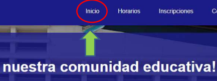
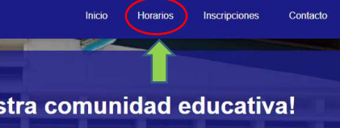
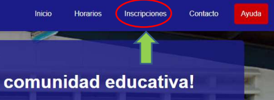
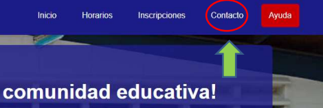
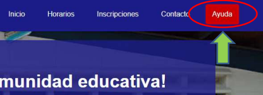
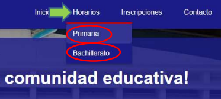
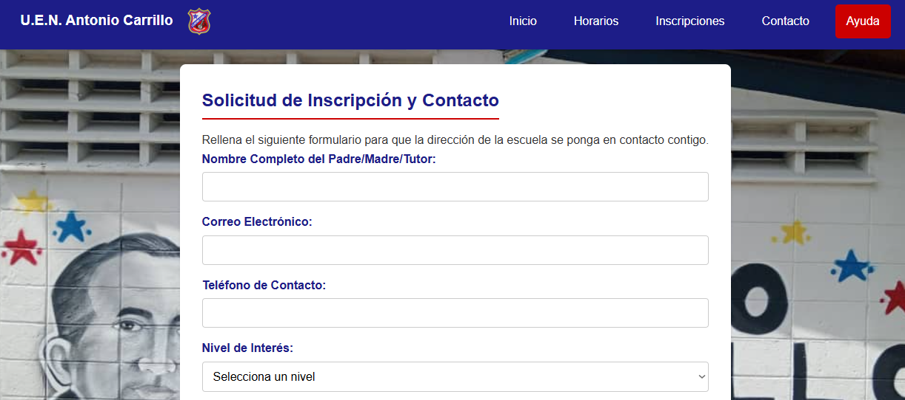
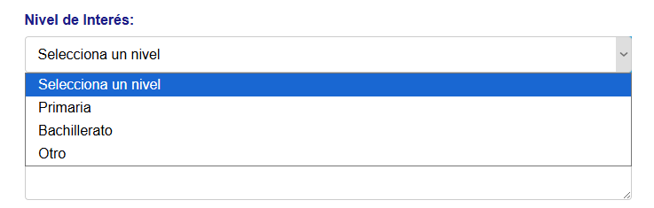

Manual de Usuario: Navegación y Servicios
Bienvenido al manual. Aquí te explicamos cómo navegar por nuestro sitio web y dónde encontrar la información principal sobre horarios, inscripciones y contacto.
1. ¿Cómo Navegar por el Menú Principal?
El menú principal se encuentra en la parte superior (o es el ícono de las tres rayitas en dispositivos móviles) y contiene los enlaces principales:
- Inicio: Te lleva a la página principal con la Misión y Visión de la institución. 
- Horarios: Contiene un submenú para ver los horarios de Primaria y Bachillerato. 
- Inscripciones: Muestra los requisitos y un formulario para solicitar información sobre el proceso. 
- Contacto: Proporciona nuestra dirección, teléfono y un mapa de ubicación. 
- Ayuda: Donde se encuentra el manual de Usuario. 
2. ¿Dónde Encuentro los Horarios?
Los horarios se encuentran en la sección "Horarios" del menú. Al pasar el cursor o hacer clic, se despliega un submenú con:
-

- Primaria: Horarios de clases del nivel de primaria.
- Bachillerato: Horarios de clases del nivel de bachillerato.
3. ¿Cómo Consulto el Proceso de Inscripción?
Visita la sección "Inscripciones". Encontrarás un formulario de contacto para dejar tus datos y preguntas, y te enviaremos la información detallada de los requisitos y fechas clave para el nuevo año escolar.
Puedes elegir sobre cual nivel estas interesado (Primaria, Bachillerato, Otro)
